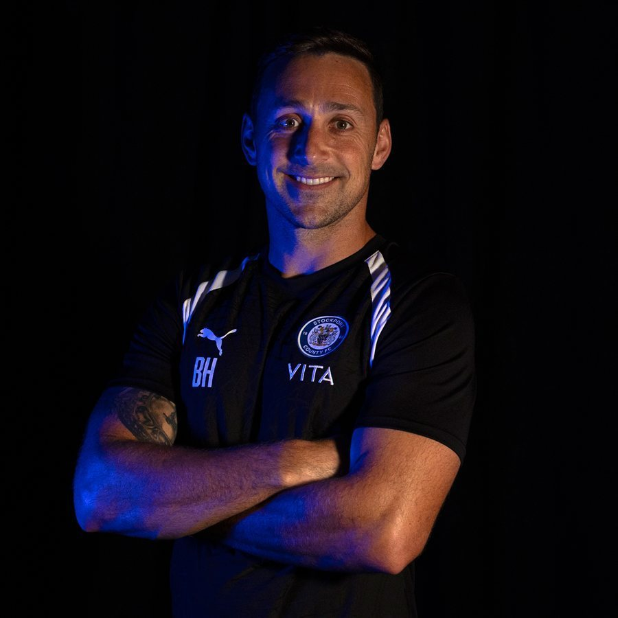

门将教练主管
本·欣奇利夫
Ben Hinchliffe
帽匠传奇门将，十年球员生涯出场427次、赢得三座联赛冠军，现为门将教练团队成员。
中文资料更新于2026-11-14。历史统计对应所述赛季或公告日期，不代表实时累计数据。
详细介绍
从传奇门将到教练
俱乐部2026年5月公告记载，欣奇利夫的十个球员赛季以427次出场和三座联赛冠军载入队史。2026/27赛季官方团队名单将他列为门将教练主管；以下长篇介绍保留了他此前各赛季的经历与里程碑。
加盟与早年经历
帽匠传奇门将本·欣奇利夫于2016年5月加盟斯托克波特郡。在来到埃奇利公园之前，他曾在AFC菲尔德度过极为成功的四年时光，连续四个赛季参加升级附加赛，并且每年都入选所在联赛年度最佳阵容。
本的职业生涯起步于比利·戴维斯执教时期的普雷斯顿北区，随后跟随戴维斯前往德比郡。他之后曾短暂效力于牛津联，随后回到兰开夏加盟班伯桥，再在前帽匠前锋安迪·普里斯麾下效力于诺斯维奇维多利亚，接替詹姆斯·斯宾塞成为球队一号门将。
菲尔德时期的英雄时刻
身高六英尺一英寸的本，永远会是菲尔德球迷心中的英雄。2014年升级附加赛决赛对阵阿什顿联的点球大战中，他罚入制胜点球，帮助球队升入北部议会联赛。
他还曾在2013年附加赛半决赛打进一记60码超级远射，并因此获得菲尔德赛季最佳进球奖。
成为County的一号门将
加盟斯托克波特郡后的首个赛季，本在可能进行的50场比赛中出场47次，随后一个赛季则出场48次。当球队在之后一个赛季夺得北部国家联赛冠军时，欣奇利夫成为队内唯一一位在所有赛事中打满每一分钟的球员，并完成22场零封。
球队升级后，他依旧稳坐一号门将位置。在2019/20赛季的所有赛事中，他仅缺席一场比赛，并完成9场零封，随后在2020/21赛季开始前正式转为全职职业球员。
传奇地位的确立
效力帽匠期间，本已经为俱乐部出场超过350次，进一步巩固了自己作为斯托克波特郡传奇人物的地位。2020/21赛季是他身披帽匠战袍以来最成功的赛季之一，他在国家联赛完成19场零封，为联赛所有门将之最，尽管球队最终在附加赛中遗憾错失升级。
他的表现也让他与瑞安·克罗斯代尔共同获得俱乐部“球员票选年度最佳球员”奖项。
里程碑与重返EFL
2022年2月，本在主场1比0战胜沃金的比赛中完成了自己代表俱乐部的第250次出场，并以零封庆祝这一里程碑。不久之后，他又在客场2比0战胜伊斯特利的比赛中，成为斯托克波特郡历史上首位完成100场零封的门将。
那个赛季，他还帮助球队在三年内第二次夺得联赛冠军，并成功重返英格兰足球联赛。
EFL赛场的稳定表现
在自己作为英格兰足球联赛门将的首个完整赛季中，35岁的本继续迎接挑战。他在各项赛事中出场46次，共完成18场零封，这是自1996/97赛季保罗·琼斯以来，帽匠门将在EFL赛季中的最佳零封纪录。
球队整个赛季仅丢37球，成为当季英乙第二佳防守纪录，也是俱乐部自1921/22赛季以来、超过100年间的最佳防守表现。
纪录、温布利与冠军
2023年1月，对阵格林斯比镇的比赛中，本迎来了自己代表俱乐部的第300次出场。而仅仅一个月后，在对阵哈罗盖特的比赛中完成第307次出场时，他又打破了俱乐部门将历史出场纪录。
在随后对阵索尔福德城的升级附加赛半决赛中，他在点球大战中扑出两粒点球，帮助帽匠晋级温布利，再次奠定了自己的传奇地位。
接下来的赛季，本正式写入斯托克波特郡历史。他成为俱乐部历史上首位随队完成三次升级的球员，并帮助球队在戴夫·查利诺执教下夺得英乙冠军。那个赛季，本在联赛中打满每一分钟，并以17场零封获得联赛金手套奖。他的表现也让他同时当选球迷票选与球员票选年度最佳球员。
第十个赛季
尽管伤病影响了他的2024/25赛季，本仍然出场23次，帮助球队获得英甲第三名，这是俱乐部23年来的最佳联赛排名。
如今，他已经进入自己效力斯托克波特郡的第十个赛季，并正在冲击自2000年的迈克·弗林以来，首位代表俱乐部出场达到400场的球员纪录。
赞助与编号
本的主场球衣赞助人为Ben Walker，客场球衣赞助人为Mason家族。
本在斯托克波特郡的球员编号（SCAN）为：1357。
- 目前职务 / 位置
- 门将教练主管
生涯时间线
- 从传奇门将到教练
俱乐部2026年5月公告记载，欣奇利夫的十个球员赛季以427次出场和三座联赛冠军载入队史。2026/27赛季官方团队名单将他列为门将教练主管；以下长篇介绍保留了他此前各赛季的经历与里程碑。
- 加盟与早年经历
帽匠传奇门将本·欣奇利夫于2016年5月加盟斯托克波特郡。在来到埃奇利公园之前，他曾在AFC菲尔德度过极为成功的四年时光，连续四个赛季参加升级附加赛，并且每年都入选所在联赛年度最佳阵容。
- 菲尔德时期的英雄时刻
身高六英尺一英寸的本，永远会是菲尔德球迷心中的英雄。2014年升级附加赛决赛对阵阿什顿联的点球大战中，他罚入制胜点球，帮助球队升入北部议会联赛。
- 成为County的一号门将
加盟斯托克波特郡后的首个赛季，本在可能进行的50场比赛中出场47次，随后一个赛季则出场48次。当球队在之后一个赛季夺得北部国家联赛冠军时，欣奇利夫成为队内唯一一位在所有赛事中打满每一分钟的球员，并完成22场零封。
- 传奇地位的确立
效力帽匠期间，本已经为俱乐部出场超过350次，进一步巩固了自己作为斯托克波特郡传奇人物的地位。2020/21赛季是他身披帽匠战袍以来最成功的赛季之一，他在国家联赛完成19场零封，为联赛所有门将之最，尽管球队最终在附加赛中遗憾错失升级。
- 里程碑与重返EFL
2022年2月，本在主场1比0战胜沃金的比赛中完成了自己代表俱乐部的第250次出场，并以零封庆祝这一里程碑。不久之后，他又在客场2比0战胜伊斯特利的比赛中，成为斯托克波特郡历史上首位完成100场零封的门将。
- EFL赛场的稳定表现
在自己作为英格兰足球联赛门将的首个完整赛季中，35岁的本继续迎接挑战。他在各项赛事中出场46次，共完成18场零封，这是自1996/97赛季保罗·琼斯以来，帽匠门将在EFL赛季中的最佳零封纪录。
- 纪录、温布利与冠军
2023年1月，对阵格林斯比镇的比赛中，本迎来了自己代表俱乐部的第300次出场。而仅仅一个月后，在对阵哈罗盖特的比赛中完成第307次出场时，他又打破了俱乐部门将历史出场纪录。
- 第十个赛季
尽管伤病影响了他的2024/25赛季，本仍然出场23次，帮助球队获得英甲第三名，这是俱乐部23年来的最佳联赛排名。
- 赞助与编号
本的主场球衣赞助人为Ben Walker，客场球衣赞助人为Mason家族。
- 2026/27赛季
斯托克波特郡门将教练主管。